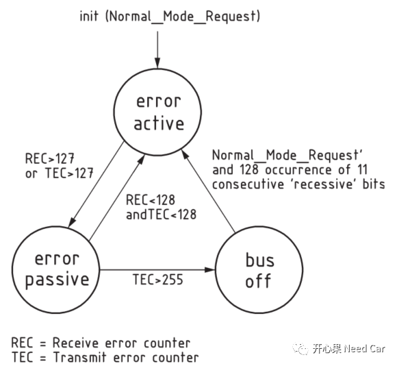
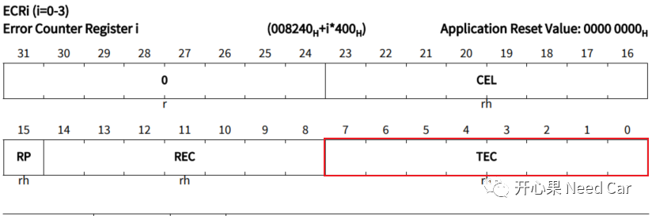
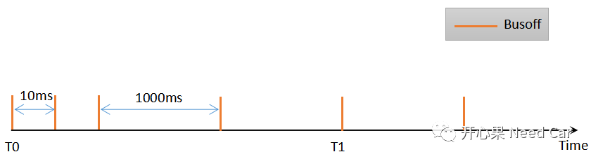
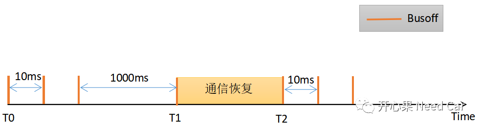

开心果 Need Car · 2022-03-09T15:07:00+08:00 · 微信原文
首先，我们要知道Busoff问题与CAN/CANFD总线相关。在开发和测试时，Busoff问题相对来说麻烦一点。就测试工程师来说，测试脚本需要好好思考一番，以确保测试覆盖度；对于开发人员来说就更麻烦了，一般专用的Busoff测试工具可能需要向测试组借，以确保开发的鲁棒性，实际上，很多开发工程师只是简单的验证一个Busoff故障可以上报就完事了，剩下的丢给测试组测试。
Busoff是个啥？这个单词拆开看，Bus Off，即总线掉线，这不是说总线不能用了，而是当前该节点脱离总线，不参与通信，说的更具体一点就是当前节点的Controller关闭，节点无法在此期间收/发报文。注意，此期间ECU依然在正常运行，所有的任务依然被OS调度。如果节点一直收不到网络管理报文，网络切换到Bus Sleep Mode，则ECU会进入下电流程。
Busoff是如何出现的呢？这个问题我前面有提到过，大家可以回顾基于VH6501的BusOff快慢恢复测试。简单说就是节点的发送计数器（TEC）数值＞255。
我们知道，NO ACK错误也会让发送节点的TEC不断累加计数，如果总线上就只有一个节点，该节点发送的报文没有节点应答，TEC是否会累加到255，进而产生Busoff呢？答：不会。这是一个特殊情况，当总线上只有一个节点时，该节点发送的报文确实没有其他节点可以应答，但是此节点的TEC不会累加到255，而是128。为什么会这样呢？如果一个总线只有一个节点，也就没有什么通信的必要性了，就一个节点，和谁通信呢？这不就是自言自语吗？既然就一个节点自己玩，那也别脱离总线了，即Busoff了，等到其他节点加入再说吧。
既然TEC达到了128，当前节点也就进入了error passive模式，这点11898-1中是有明确规定的，Node的状态关系如下所示：

TEC的计数实质是一个硬件计数，每个CAN模块会有一个专门的寄存器存储TEC，以英飞凌为例，如下所示。因此，Busoff状态最先由底层捕获，之后通过中断或者回调的方式告知上层模块。

开发Busoff功能，首先你得会制造Busoff。制造Busoff的手段有多种，一般来说可以使用如下手段：
1、物理短接
上述几种方式实质是干扰物理总线上的压差，物理总线压差出错以后，回踩的数据和实际发送的数据将不匹配，进而导致Busoff。
这种方式也是开发人员最常用的方式，主要是验证Busoff对应的DTC是否会上报。
在这里提一下，在测试中，物理干扰产生Busoff，再去掉干扰，需求会要求一个通信恢复时间。一般Bootloader和Application中，可能要求恢复的时间不一样，比如：Bootloader中，去除Busoff干扰以后，10ms内节点恢复正常通信；Application中，去除Busoff干扰以后，500ms内恢复节点通信。
2、写测试脚本干扰发送Bit位
1、Busoff DTC由哪个模块上报？
首先，需要清楚Busoff DTC由哪个模块上报合理。Busoff DTC可以由CanSM模块上报给DEM，也可以由SWC，通过RTE上报给DEM。
（1）CanSM模块上报
如果是CanSM模块上报Busoff DTC，调用接口Dem_ReportErrorStatus()。按照Autosar规范，CanSM模块属于BSW，因此可以调用该接口，此接口只能由BSW模块调用，而SWC不能使用该接口上报故障状态。
（2）SWC模块上报
如果是SWC上报Busoff DTC，则调用Dem_SetEventStatus()接口，实际该接口会被RTE再封装一下（因为走RTE）。
2、Busoff的快/慢恢复
Busoff产生以后，为保证节点功能的快速恢复，需求中会给出Busoff的快/慢恢复时间，即CanSMBorTimeL1与CanSMBorTimeL2。
一般来说CanSMBorTimeL1周期会比CanSMBorTimeL2周期小，比如：CanSMBorTimeL1 = 10ms，CanSMBorTimeL2 = 1000ms。
如果节点在快恢复期间，通信功能没有恢复正常，当快恢复次数达到阈值时就会进入慢恢复期，以此避免功能异常节点过多的干扰总线。Autosar定义了参数BusoffCanSMBorCounterL1ToL2 表示快恢复进入慢恢复的次数。
CanSMBorTimeL1、CanSMBorTimeL2、BusoffCanSMBorCounterL1ToL2都是标准的Autosar参数，因此，各家Autosar供应商的配置工具里面也会提供这3个参数的配置，开发者直接按照需求配置即可。
3、Busoff DTC上报的使能条件
4、Busoff DTC何时上报
如下工况，Busoff连续产生，通信功能没有恢复成功，那么从T1时刻起，Busoff DTC就应上报给DEM，且上报FAILED状态，当然，T1之后连续发生的Busoff，也超过了5次，还是会上报FAILED状态。

如下工况，在T1时刻，连续发生了4次Busoff，T1~T2区间，节点通信功能恢复正常，在T2时刻又发生了Busoff，且T2时刻Busoff累积发生5次，应该报Busoff DTC吗？

参考资料
AUTOSAR_SWS_DiagnosticEventManager.pdf
AUTOSAR_SWS_CANStateManager.pdf
ISO 11898-1-2015.pdf
写在最后
往期精彩回顾